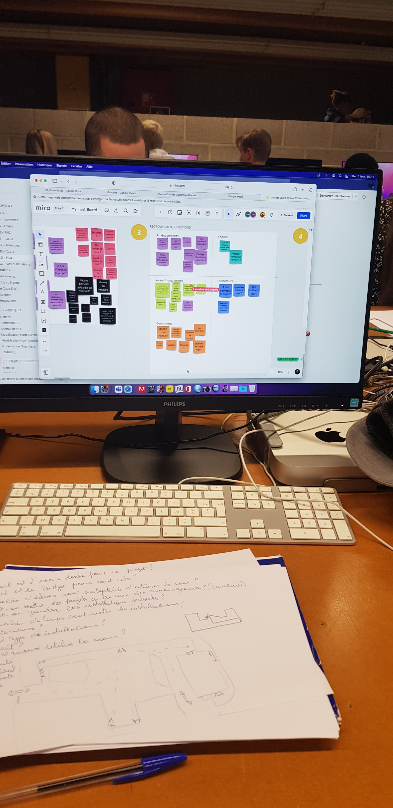
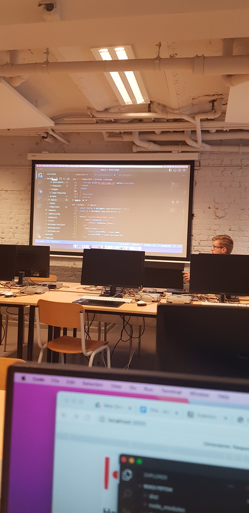
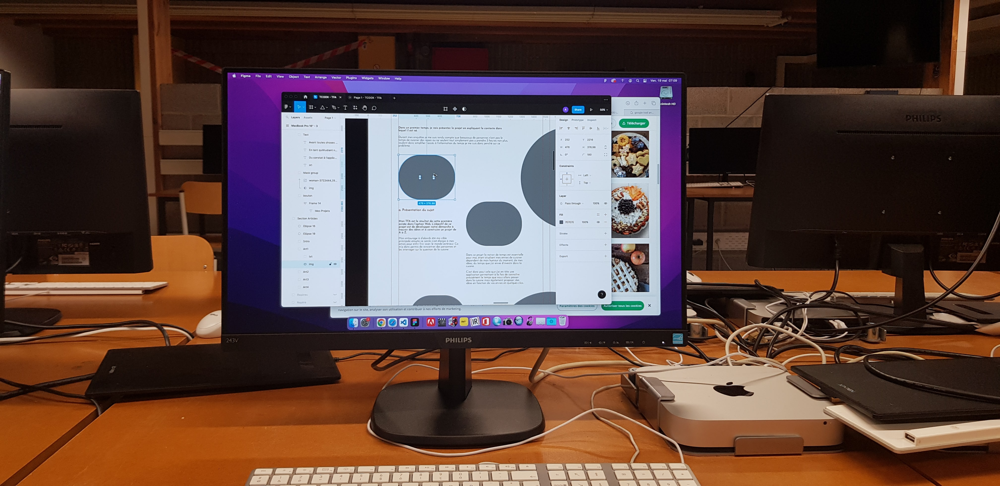
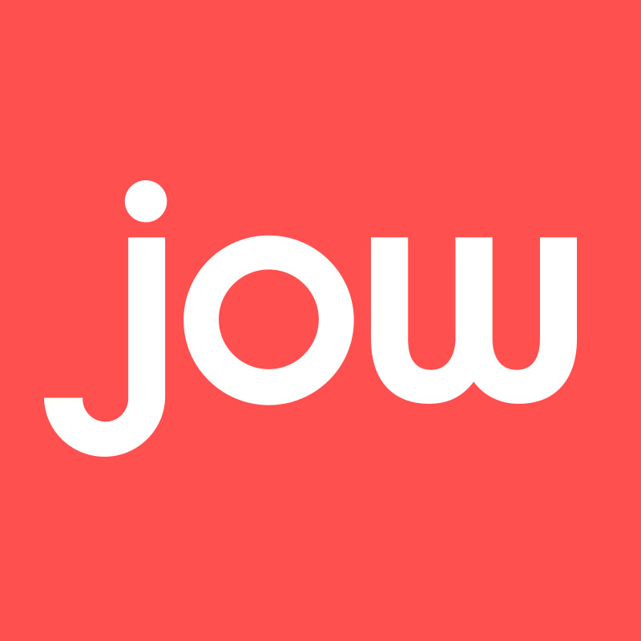
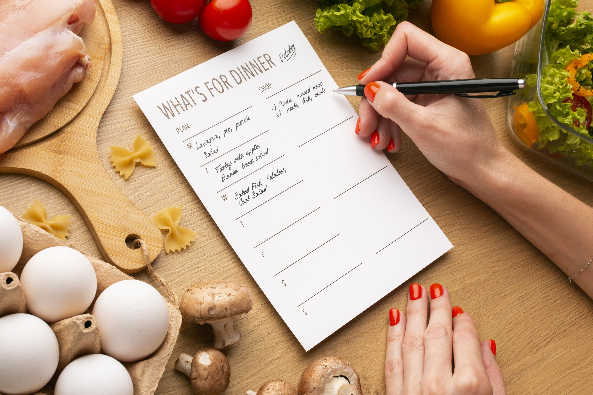

En tant qu’étudiants nous avons pour la plupart des problèmes pour cuisiner, je me suis souvent retrouvé
devant le même problème que d’autres: le manque de temps pour préparer des repas élaborés.
Avant toutes choses désirez vous en apprendre plus sur moi ?
Suivez au fil de ce site le parcours pour en arriver à ma solution dont je suis fier.
Je vais donc vous expliquer comment j'en suis arrivé à cette hypothèse finale, ainsi que les démarches que j’ai
entrepris pour y arriver
Une enquête a été menée pour comprendre comment les personnes gèrent leur temps en cuisine.
1. Introduction
Dans un premier temps, je vais présenter le projet en expliquant le contexte dans lequel il
est né.
Ce projet est une hypothèse que j'ai développée dans le cadre de mon parcours scolaire. Permettez-moi de vous
partager ma démarche et mon cheminement au sein de cette expérience captivante axée sur la cuisine et le temps.

Présentation du projet
Mon TFA est le résultat de cette première année dans l’option Web. L'objectif de ce
projet est de développer notre démarche à trouver des idées et à construire un projet de A à Z.
Mon aventure avec TCOOK a commencé dans le cadre de mon cursus scolaire. J'ai choisi de me concentrer sur
le domaine de la cuisine et de l'aide culinaire, en mettant particulièrement l'accent sur la gestion du
temps.
Dans ce projet la notion de temps est essentielle pour moi, étant étudiant
mes envies de cuisiner dépendent de mon humeur du moment, de mes idées, du temps que j’ai envie d’investir
dans la cuisine.
C’est donc pour cela que j’ai en tête une application permettant à la fois de connaître précisément le temps que nous allons passer en cuisine mais également
proposer des idées en fonction de vos envies en quelques clics.

Problématique et questionnement
La réelle problématique qui est ressortie de toutes mes interviews c’est la gestion du temps et son utilisation.
Pourquoi je perds beaucoup de temps en cuisinant ? Plusieurs réponses sont possible soit par manque
de
motivation ou d’idée ou n’ayant pas les informations sur le temps que certaines recettes prennent et donc
ne
pas se lancer dans une préparation trop longue.
Alors je voudrais répondre à toutes ces personnes ! Je vais travailler pour répondre à leurs besoins
en
suggérant une application, Cette application : TCook !
2. Recherches
Après avoir plongé au cœur de mes recherches, une révélation m'a frappé de plein fouet : nous
sommes nombreux, étudiants et travailleurs, à être confrontés à un véritable défi en cuisine. Le manque de
temps nous empêche souvent de préparer des repas élaborés et équilibrés, laissant nos papilles gustatives
insatisfaites.
Face à ce constat, j'ai entrepris des recherches approfondies pour trouver une solution à ce défi culinaire. Je
me suis plongé dans l'univers des applications culinaires existantes, telles que Marmitons, Jow, Whisk, et bien
d'autres encore, afin d'analyser leurs fonctionnalités et d'identifier leurs limites.
Ces recherches m'ont inspiré et ont ouvert la voie à l'élaboration de TCook, une application révolutionnaire qui
comblera le fossé entre notre amour pour la cuisine et notre manque chronique de temps. À partir de ces
constatations, j'ai commencé à formuler des hypothèses audacieuses qui pourraient révolutionner notre façon de
cuisiner et de préparer nos repas.
a. L'idée de TCook
C'est ainsi que l'idée de TCook a pris forme dans mon esprit.
Je rêvais d'une application révolutionnaire qui pourrait combler ce fossé entre notre amour pour la
cuisine
et notre manque chronique de temps. Une application qui nous permettrait de préparer des repas délicieux,
même lorsque le temps nous échappe, sans compromettre notre santé ou notre bien-être.

b. L'esprit de TCook réside aussi dans son design
J'ai consacré une attention particulière à l'aspect visuel de l'application, car je crois fermement que la
cuisine est un art qui doit être apprécié dans tous ses aspects, y compris
visuellement.
De plus, je crois que le design joue un rôle essentiel dans l'expérience utilisateur. Je veux que chaque
interaction dans mon application soit agréable, inspirante et intuitive. C'est pourquoi j'ai investi du
temps et des ressources dans la création d'un design à la fois esthétique et fonctionnel, afin de vouloir
offrir une
expérience rapide, facile et surtout pratique !

c. Études de marché
Les recherches que j'ai entreprises m'ont permis de plonger dans l'univers des applications
culinaires existantes, telles que Marmitons, Jow, Whisk, et bien d'autres encore. Elles m'ont certes
inspiré, mais elles ont également révélé leurs faiblesses et leurs limites. C'est à partir de ces
constatations que j'ai commencé à élaborer des hypothèses pour TCook, des hypothèses qui pourraient
révolutionner notre façon de cuisiner.
Fort de toutes ces ressources et de mon expérience, j'ai réfléchi à plusieurs hypothèses pour mon application
culinaire.
Voici quelques hypothèses qui sont ressorties
1.
Application de recettes personnalisées :
Une application qui propose des
recettes personnalisées en fonction du temps disponible, des préférences culinaires et des restrictions
alimentaires en fonction de chaque utilisateur. Elle offre une sélection variée de plats du monde entier
adaptés à chaque profil en seulement quelques clics.
2.
Plateforme de partage de recettes :
Une plateforme en ligne où les
passionnés de cuisine peuvent partager leurs recettes, leurs astuces et leurs expériences culinaires. Les
utilisateurs peuvent découvrir de nouvelles inspirations, interagir avec d'autres membres de la communauté
et créer leur propre collection de recettes favorites.
3.
Service de livraison de repas internationaux :
Un service de livraison de repas qui permet aux utilisateurs de commander des plats authentiques provenant
de différentes cuisines internationales. Les repas sont préparés par des chefs locaux et livrés
directement à domicile, offrant
ainsi une expérience culinaire variée et pratique.
4.
Application de gestion de l'alimentation :
Une application qui aide les utilisateurs à planifier leurs repas, à gérer leurs listes d'achats et à
suivre
leurs habitudes alimentaires.
Elle propose des fonctionnalités telles que la recherche de recettes, la création de menus équilibrés et
le
suivi des apports nutritionnels pour une alimentation saine et équilibrée.
En résumé, TCOOK tire son essence de mes recherches approfondies sur les applications culinaires existantes,
tout en cherchant à combler les lacunes identifiées et à proposer une expérience utilisateur unique et
améliorée. Restez à l'écoute pour découvrir comment TCOOK va révolutionner votre expérience culinaire et vous
accompagner dans votre exploration gastronomique.
3. Présentation de mon hypothèse
Imaginez vous rentrer chez vous après une longue journée de travail ou d'études, fatigué(e)
et affamé(e), et vous devez maintenant vous lancer dans la préparation d'un repas.
C'est là que mon hypothèse entre en jeu : une application d'aide à la cuisine axée sur le gain de temps,
qui vous permettra de préparer des repas sains et savoureux en un temps record.
Avec cette application, vous pourrez sélectionner des recettes en fonction de vos préférences, de vos besoins
nutritionnels et surtout de votre disponibilité en temps. Elle vous fournira des recettes adaptées à votre
emploi du temps et à vos envies, en vous proposant des idées de repas adaptées à vos disponibilités.
Est-il donc possible de gagner du temps en cuisinant ? Voyons ensembles les
réponses de nos utilisateurs.
Votre cuisine vous satisfait-elle ?
Quel est le point négatif que vous rencontrez le plus en cuisinant ?
En conclusion, ces graphiques mettent en évidence l'importance de prendre en considération les préférences et
les contraintes temporelles des utilisateurs dans le développement de solutions culinaires. Ils m'incitent à
continuer d'explorer des moyens novateurs pour faciliter la préparation de repas adaptés aux besoins
individuels, afin d'améliorer la satisfaction globale des utilisateurs vis-à-vis de la cuisine en général.
Comme vous le constatez, mon hypothèse peut vous rappeler de nombreuses applications
culinaires existantes sur le marché. Cependant, permettez-moi de vous montrer en quoi TCook se distingue et
possède sa propre identité unique.
Grâce à ses fonctionnalités avancées, cette application vous offre la possibilité de planifier vos recettes de
la
semaine en fonction de votre disponibilité. Vous pouvez facilement organiser vos repas, que ce soit pour chaque
jour de
la semaine ou en indiquant le temps que vous souhaitez consacrer à chaque repas.

Permettez-moi de vous expliquer plus en détail. Par exemple, si vous rentrez du travail fatigué et que vous ne
souhaitez
pas passer plus de 20 minutes en cuisine, vous pouvez spécifier cette préférence. L'application vous proposera
alors une
sélection de 5 repas par jour parmi lesquels vous pourrez choisir le meilleur pour chaque jour en cochant
simplement
votre préférence. Ainsi, vous aurez des idées de repas rapides et pratiques adaptées à votre emploi du temps.
la Substitution d'Ingrédients.
J'ai imaginé cette fonctionnalité pour rendre votre expérience culinaire encore plus
flexible et personnalisée.
ils arrivent souvent d'être confronté à des défits en cuisine, que ce soit des allergies
alimentaires, des restrictions diététiques ou tout simplement l'absence d'un ingrédient clé dans votre
garde-manger.
C'est pourquoi j'ai pensé à une fonctionnalité unique qui vous permet de trouver des alternatives
savoureuses, adaptées à chaque recette et à chaque individu.
4. Conclusion
En conclusion, tout le travail effectué pour créer TCook a été empreint de passion, de
dévouement et de recherches
approfondies.
J'ai cherché à relever le défi de simplifier la cuisine pour les étudiants et les travailleurs pressés en leur
offrant
une solution pratique et personnalisée. TCook est bien plus qu'une simple application culinaire, c'est un réel
outil du
quotidien qui répondra à nos besoins en cuisine en tenant compte de nos contraintes temporelles.
Par-dessus tout, TCook est un projet que j'aimerais moi-même utiliser au quotidien, et c'est justement de là que
je tire
mon envie d'aboutir à un produit final complet. Cela me permettrait de résoudre le problème fréquent que je
rencontre :
ne pas savoir quoi, comment et quand me faire à manger.
Merci à vous de suivre ce projet, et j'espère que dans un an, ce projet pourra être concrétisé pendant ma
troisième
année de Haute école.
Prendre contact :
Je vous invite à me contacter par e-mail si vous le désirez.
C'est avec plaisir que je réponds à vos questions.